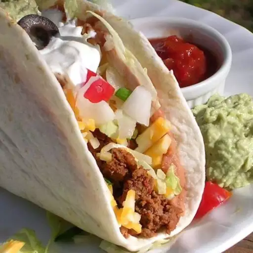

Double Decker Tacos

Description
The best tacos! A soft shell taco is layered with refried beans, then
wrapped around a hard shell taco, which is filled with seasoned ground
beef and topped with cheese, lettuce, tomato, onion, sour cream and fresh
guacamole. You can top it with whatever you like, but I recommend loading
it up! Also, if you don't eat meat, put melted cheese on the soft shell,
and the refried beans in the hard.
Ingredients
- 100 gram cottage chees
- 50 gram kidney beans
- 6 crisp taco shells
- 2 avocados
- 1/2 cup yogurt
- 1 onion
- 2 tomato
- 1 cup cheddar cheese
- salt and pepper to taste
Steps
- Cook the cottage cheese and kidney beans.
- Mash the cooked cottage cheese and beans.
- Crisp the taco shells
-
Fill with chopped onion, tomato, cooked filling, chopped avocado,
cheddar cheese.
- Sprinke salt and pepper to taste
Back to Home